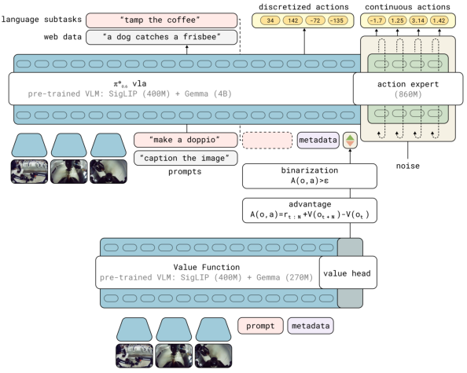
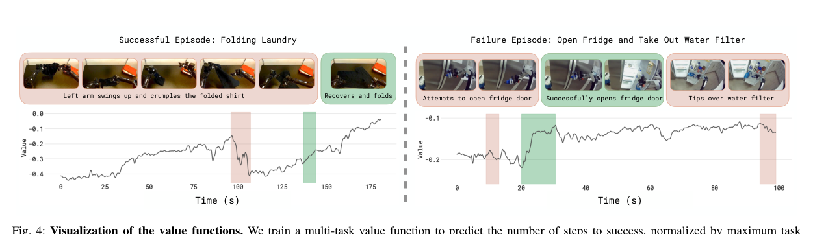
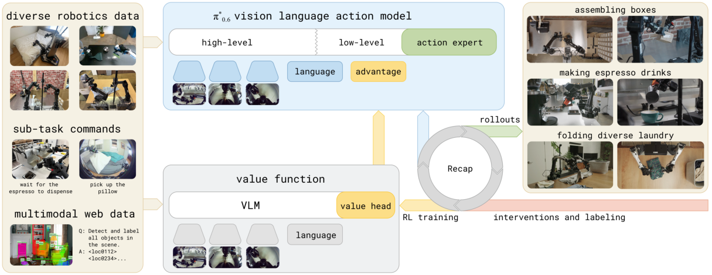
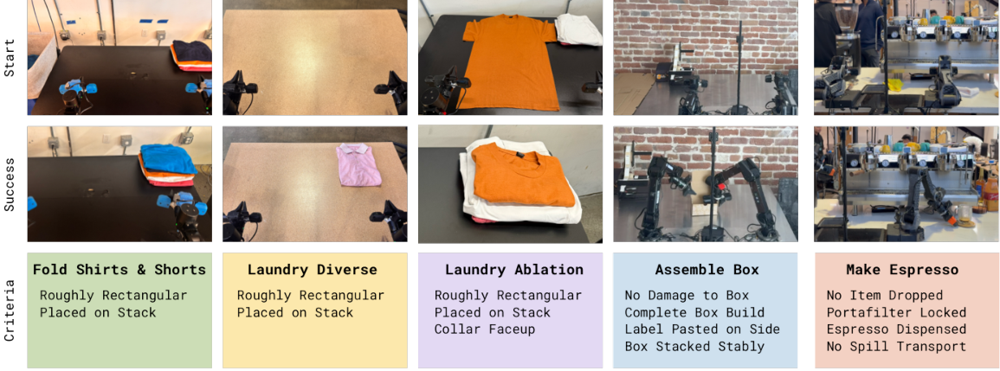

💡速记层 · 思想 / 逻辑 / 方法
默认读完就走的一层——只讲思想、逻辑、方法；效果只作验证。要核对原文 / 钻细节再看下面的「深读层」。
- 模仿学习（SFT）受限于示范数据质量上界：策略充其量学到人类遥操作水平，累积误差还会让它比人类更差。
- RL 可以突破这个天花板，但大型 flow matching VLA 没有可直接计算的 log-likelihood，PPO / REINFORCE 极难稳定扩展。
- 关键洞察：把"这个动作是否比平均更优"这个二元标记作为文本 token 输入给 VLA——模型用 classifier-free guidance 风格同时学条件与无条件策略，无需显式计算 likelihood。
- 数据来源多元：demonstrations + 自主 rollout（成功/失败）+ 人类在线干预（DAgger 风格），全部统一到同一个 offline RL 框架里。
- 迭代循环：采数据 → 更新 value function → 重估 advantage → 更新 VLA → 重新采数据，重复即可持续提升。
在洗衣（多样）、咖啡制作、箱子组装三类任务上，RECAP 相比 offline RL + SFT 基线将吞吐量翻倍以上，并将失败率减半；最终 90%+ 成功率达到实用级别（连续运行 13 小时制作咖啡）。与 AWR、PPO 相比，advantage conditioning 显著更优。
想看具体数字（点开）
- Diverse laundry + espresso：吞吐量 >2× 提升（on-robot RL 迭代后 vs. SFT 基线）。
- Box assembly：2 次迭代后吞吐量 2× 提升；espresso + box 成功率约 90%。
- T-shirt folding（严格 collar-up）：2 次 RECAP 迭代 + 600 rollout/iter → 97% 成功率。
- Espresso 连续运行 13 小时无中断；laundry 在新家连续 2 小时无中断。
- 价值函数：Gemma 3 670M backbone，201 个 bin，负步数到成功的分布。
- π*₀.₆ VLA backbone：SigLIP 400M + Gemma 3 4B；action expert 860M。
Track A（人形/移动操作 VLA）高度相关：这是 π0 家族的最新成员，直接展示了如何让大型 flow matching VLA 从部署经验中通过 RL 持续提升——advantage conditioning 是无需改变 VLA 架构即可引入 RL 训练的简洁入口，对人形机器人操作任务的提升路径有直接参考价值。Track B（足式控制算法）不相关——本文聚焦固定双臂操作，不涉及 locomotion。
◆核心观点 · 证据
每条 = 中文论点 + 📍页/节 + 🔤逐字原文(Ctrl-F 锚点) + 🀄译文 + 💡解读。
We present a general-purpose method, RL with Experience and Corrections via Advantage-conditioned Policies (RECAP), that provides for RL training of VLAs via advantage conditioning.
A critical distinction is that we train an entire VLA end-to-end using (iterated) offline RL, with an expressive flow matching VLA model. This is made possible by a simple and scalable advantage-conditioned policy extraction method, which removes much of the complexity of using policy gradient style objectives with large VLA models.

To incorporate information about the advantage into the policy, we expand the model inputs to contain an additional improvement indicator as an additional text input, inputting "Advantage: positive" when It = True, and "Advantage: negative" otherwise.
We use a variant of advantage conditioning [48], where the policy is trained on all of the data with supervised learning, but with an additional input indicating how optimal the action is based on the advantage.

we represent V πref with a multi-task distributional value function pϕ(V |ot, ℓ) ∈ ΔB, mapping the observations ot and language command ℓ to a distribution over B discretized value bins.
To include human corrections, we found it useful to force It = True (i.e., positive) for actions provided as human corrections during autonomous rollouts. This choice is reasonable if we assume that human experts always provide good corrective actions.

π0.6 improves on π0.5 in several ways: (i) The pre-training dataset is augmented with additional data from multiple robot platforms. (ii) The base VLM is Gemma 3 [78] 4B model. (iii) The size of the action expert is increased to 860M parameters.

Throughput more than doubles on the diverse laundry folding and espresso tasks from including on-robot data (the improvement from offline RL + SFT to the final π∗0.6 model), and the rate of failure reduces by about a factor of two.
applying RECAP in this setting for two iterations (collecting 600 trajectories in each iteration) results in a policy that succeeds 97% of the time, and with high speed.
While both AWR and PPO can attain reasonable results, they both fall far short of our method, and struggle to improve over the offline RL + SFT π∗0.6 model. For PPO, we had to use a small trust-region constraint (η = 0.01) to stabilize training in this off-policy setting, and while this makes training stable, the method does not achieve good performance. AWR can achieve a reasonable success rate, but leads to much slower polies with lower throughput.
First, our system is not fully autonomous: it relies on human labeling and effort for reward feedback, interventions, and episode resets. A number of prior works have explored ways to automate these components, and VLAs offer new ways to provide for more automated data collection, for example by using high-level policies to reason through resetting the scene.
⎘开源状态
基于实时网络核查（2026-06-02）：论文无开源声明，openpi 仓库截至目前未包含 π*₀.₆ / π0.6 的代码或权重。
- 代码
- 未开源 论文无 GitHub 链接；openpi 仅含 π0 / π0-FAST / π0.5
- 权重
- 未开源 openpi 无 pi06 / pistar06 checkpoint（GitHub issue #860 确认为未实现状态）
- 数据
- 未公开 预训练数据集未释出
- 博客/视频
- 部分 pi.website/blog/pistar06 + 演示视频（模型卡 PDF 已公开）
openpi 最新版本（截至 2026-06）支持 π0、π0-FAST、π0.5。π0.6 / π*₀.₆ 未包含，社区已有 issue（#860）询问实现方案，官方尚未回应。如需复现，需自行从 π0.5 出发实现 advantage conditioning 扩展。
https://pi.website/blog/pistar06
⚖批判 · 评级
首个在大型 flow matching VLA 上端到端实施 iterated offline RL 的完整系统，且结果达到实用级别（13 小时连续咖啡制作）。Advantage conditioning 是绕过 PPO log-likelihood 难题的优雅工程解——思想简单、实现轻量，对 flow matching 模型族系通用。π0 家族的直接延续，与 π0.5（库内已读）形成明确的继承关系，读完本文即掌握 π 系列从"模仿学习泛化"到"RL 自主提升"的全链条。
① 非完全自主：reward labeling、interventions、reset 均需人工，大规模部署成本不小。② 任务范围较窄：评测集中在固定双臂平台上的三类操作任务，泛化到移动平台/人形尚待验证。③ 探索策略贪婪：强依赖初始策略有合理行为，从头探索能力弱。④ 未开源：无法直接复现，只能借鉴方法。⑤ 价值函数假设 episode-level 稀疏奖励，对奖励定义本身存在局限。
评级：Important 方法清晰、结果实用、π 家族必读——但任务范围和平台限制使其尚未达到 Breakthrough 级别。